ggally_*(): List of available high-level plots
GGally Team
May 28, 2020
Source:vignettes/ggally_plots.Rmd
ggally_plots.RmdThe purpose of this vignette is to display all high-level plots
available in GGally to be used in particular with
ggduo() and ggpairs(). The name of all the
corresponding functions are of the form ggally_*(). Most of
them accept a discrete variables to be passed to the
colour aesthetic.
We can distinct bivariate plots requiring two variables for x and y axis respectively and diagonal plots when the same variable is plotted on x and y axis.
Bivariate plots
with 2x continuous variables
ggally_autopoint()
ggally_autopoint(tips, aes(x = total_bill, y = tip))
ggally_autopoint(tips, aes(x = total_bill, y = tip, colour = time))
ggally_cor()
ggally_cor(tips, aes(x = total_bill, y = tip))
ggally_cor(tips, aes(x = total_bill, y = tip, colour = time))See also ggally_statistic().
ggally_density()
ggally_density(tips, aes(x = total_bill, y = tip))
ggally_density(tips, aes(x = total_bill, y = tip, colour = time))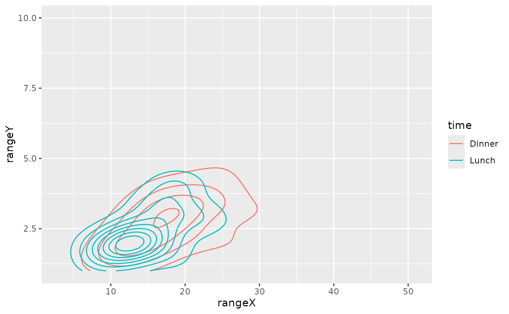
ggally_points()
ggally_points(tips, aes(x = total_bill, y = tip))
ggally_points(tips, aes(x = total_bill, y = tip, colour = time))
ggally_smooth(), ggally_smooth_lm() &
ggally_smooth_loess()
ggally_smooth_lm(tips, aes(x = total_bill, y = tip))
ggally_smooth_lm(tips, aes(x = total_bill, y = tip, colour = time))
ggally_smooth_loess(tips, aes(x = total_bill, y = tip))
ggally_smooth_loess(tips, aes(x = total_bill, y = tip, colour = time))See also ggally_smooth() for more options.
with 2x discrete variables
ggally_colbar()
ggally_colbar(tips, aes(x = day, y = smoker))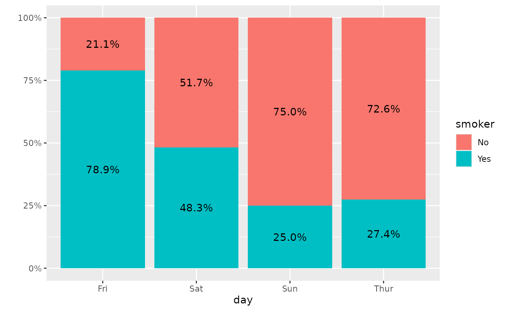
Note: the colour aesthetic is not taken into account.
ggally_autopoint()
ggally_autopoint(tips, aes(x = day, y = smoker))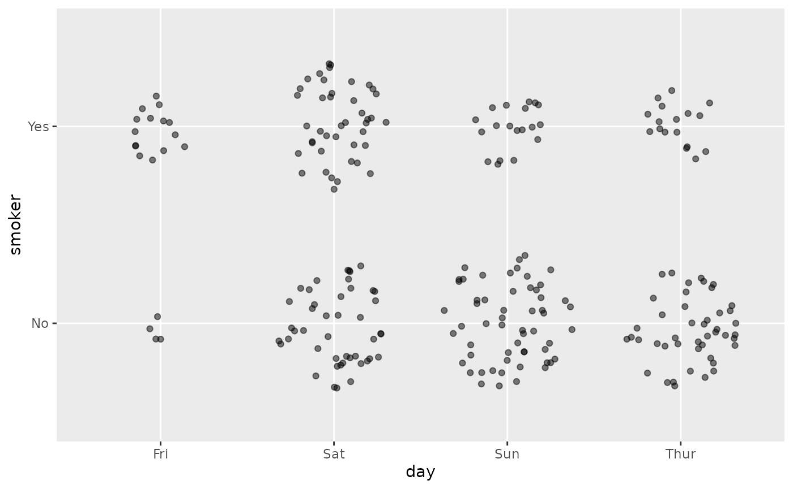
ggally_autopoint(tips, aes(x = day, y = smoker, colour = time))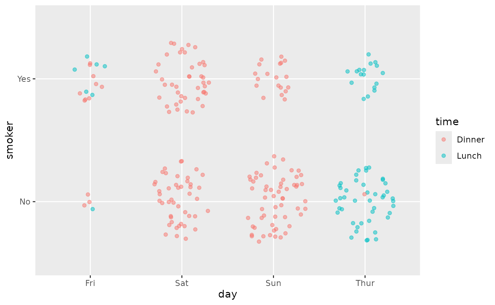
ggally_count()
ggally_count(tips, aes(x = day, y = smoker))
ggally_count(tips, aes(x = day, y = smoker, colour = time))
ggally_cross()
ggally_cross(tips, aes(x = day, y = smoker))
ggally_cross(tips, aes(x = day, y = smoker, colour = time))
ggally_cross(tips, aes(x = day, y = smoker, colour = smoker))
Note: colour aesthetic is taken into account only if it corresponds to x or to y.
ggally_crosstable()
ggally_crosstable(tips, aes(x = day, y = smoker))
ggally_crosstable(tips, aes(x = day, y = smoker), cells = "col.prop", fill = "std.resid")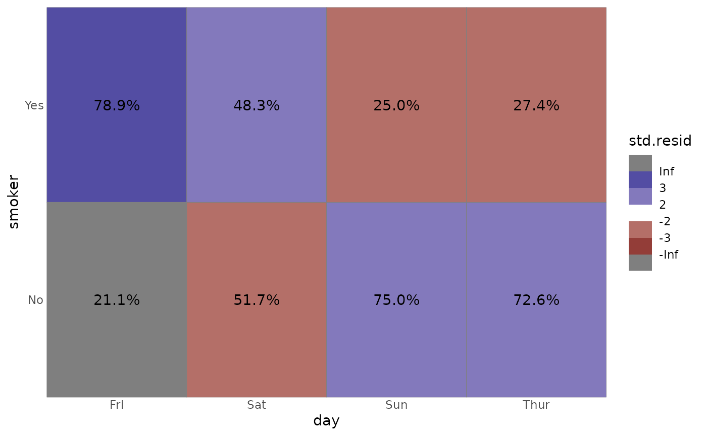
Note: colour aesthetic is not taken into account.
ggally_facetbar()
ggally_facetbar(tips, aes(x = day, y = smoker))
ggally_facetbar(tips, aes(x = day, y = smoker, colour = time))
ggally_ratio()
ggally_ratio(tips, aes(x = day, y = smoker))
ggally_ratio(tips, aes(x = day, y = smoker, colour = time))
ggally_rowbar()
ggally_rowbar(tips, aes(x = day, y = smoker))Note: the colour aesthetic is not taken into account.
ggally_table()
ggally_table(tips, aes(x = day, y = smoker))
ggally_table(tips, aes(x = day, y = smoker, colour = time))
ggally_table(tips, aes(x = day, y = smoker, colour = smoker))Note: colour aesthetic is taken into account only if it corresponds to x or to y.
ggally_trends()
ggally_trends(tips, aes(x = day, y = smoker))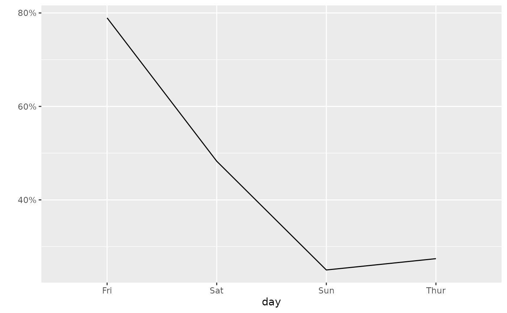
ggally_trends(tips, aes(x = day, y = smoker, colour = time))
with 1x continuous and 1x discrete variables
ggally_autopoint()
ggally_autopoint(tips, aes(x = total_bill, y = day))
ggally_autopoint(tips, aes(x = total_bill, y = day, colour = time))
ggally_box() &
ggally_box_no_facet()
ggally_box(tips, aes(x = total_bill, y = day))
ggally_box(tips, aes(x = total_bill, y = day, colour = time))
ggally_box_no_facet(tips, aes(x = total_bill, y = day))
ggally_box_no_facet(tips, aes(x = total_bill, y = day, colour = time))
ggally_denstrip()
ggally_denstrip(tips, aes(x = total_bill, y = day))
#> `stat_bin()` using `bins = 30`. Pick better value `binwidth`.
ggally_denstrip(tips, aes(x = total_bill, y = day, colour = time))
#> `stat_bin()` using `bins = 30`. Pick better value `binwidth`.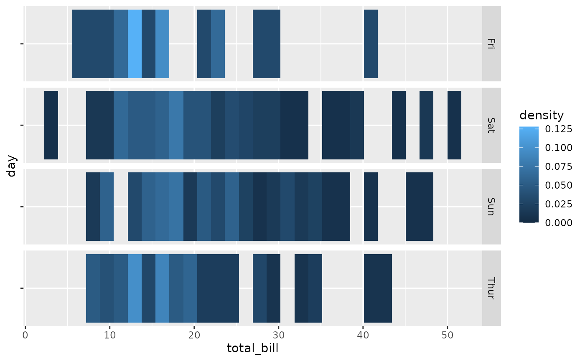
ggally_dot() &
ggally_dot_no_facet()
ggally_dot(tips, aes(x = total_bill, y = day))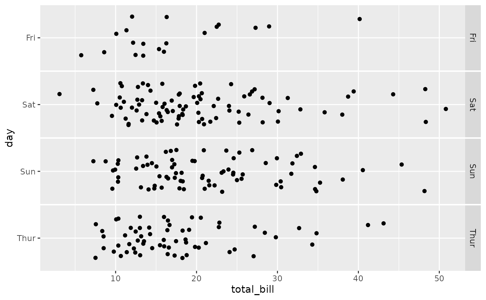
ggally_dot(tips, aes(x = total_bill, y = day, colour = time))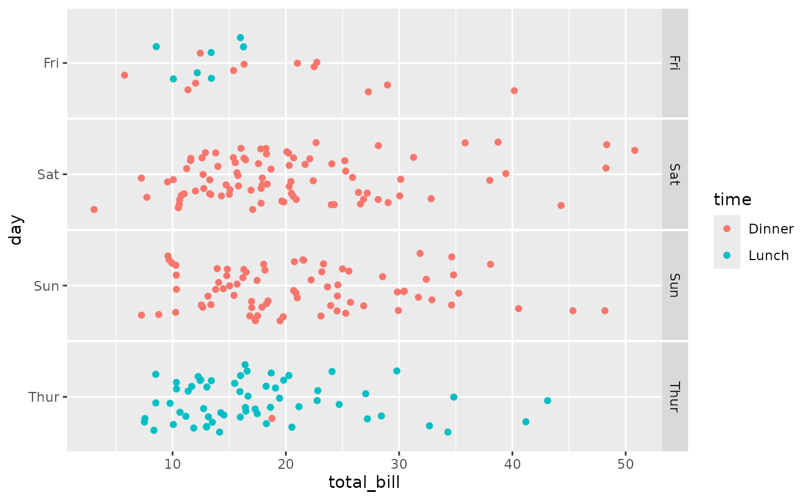
ggally_dot_no_facet(tips, aes(x = total_bill, y = day))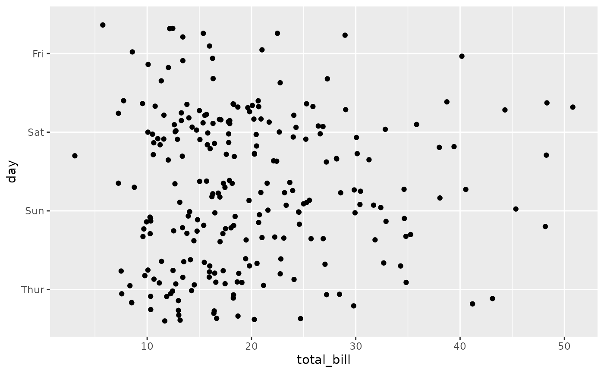
ggally_dot_no_facet(tips, aes(x = total_bill, y = day, colour = time))
ggally_facetdensitystrip()
ggally_facetdensitystrip(tips, aes(x = total_bill, y = day))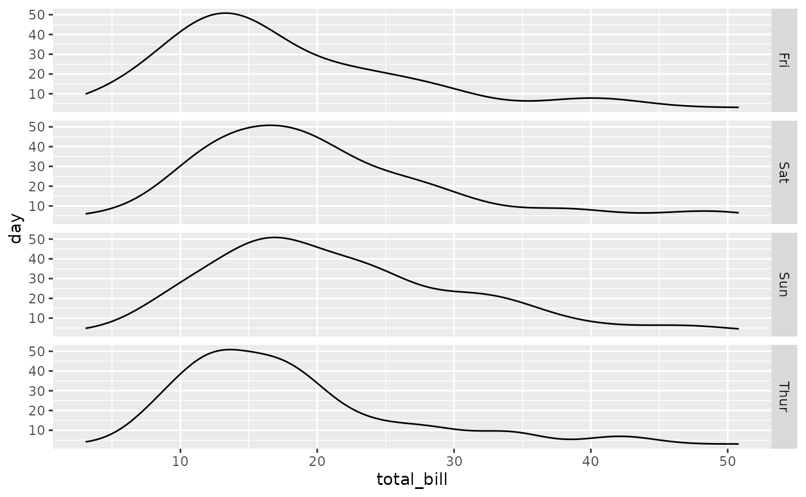
ggally_facetdensitystrip(tips, aes(x = total_bill, y = day, colour = time))
#> Warning: Groups with fewer than two data points have been
#> dropped.
#> Warning: Removed 1 row containing missing values or values outside the scale
#> range (`geom_line()`).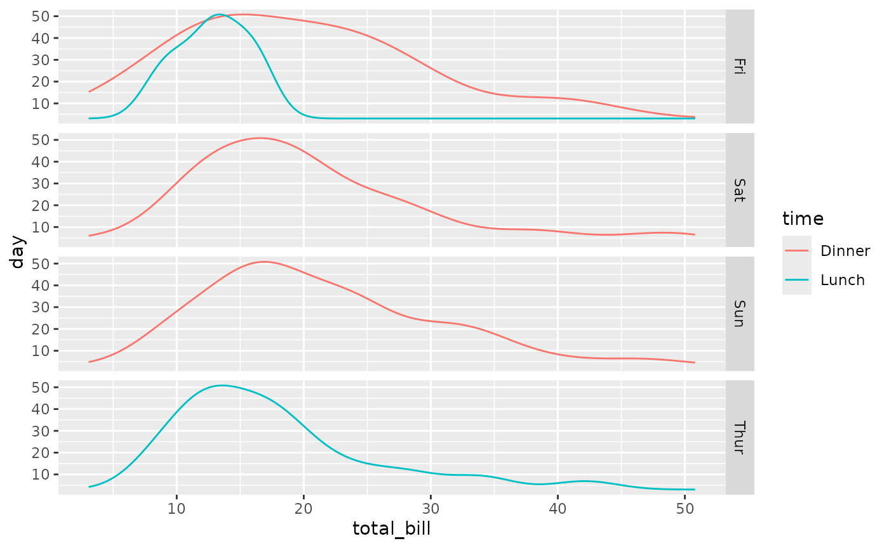
ggally_facethist()
ggally_facethist(tips, aes(x = total_bill, y = day))
#> `stat_bin()` using `bins = 30`. Pick better value `binwidth`.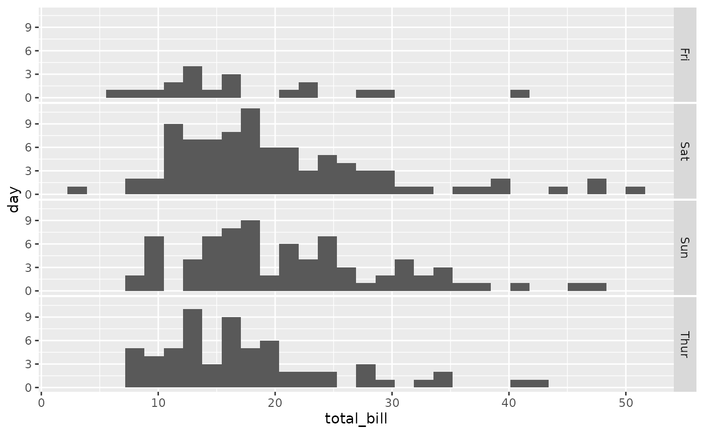
ggally_facethist(tips, aes(x = total_bill, y = day, colour = time))
#> `stat_bin()` using `bins = 30`. Pick better value `binwidth`.
ggally_summarise_by()
ggally_summarise_by(tips, aes(x = total_bill, y = day))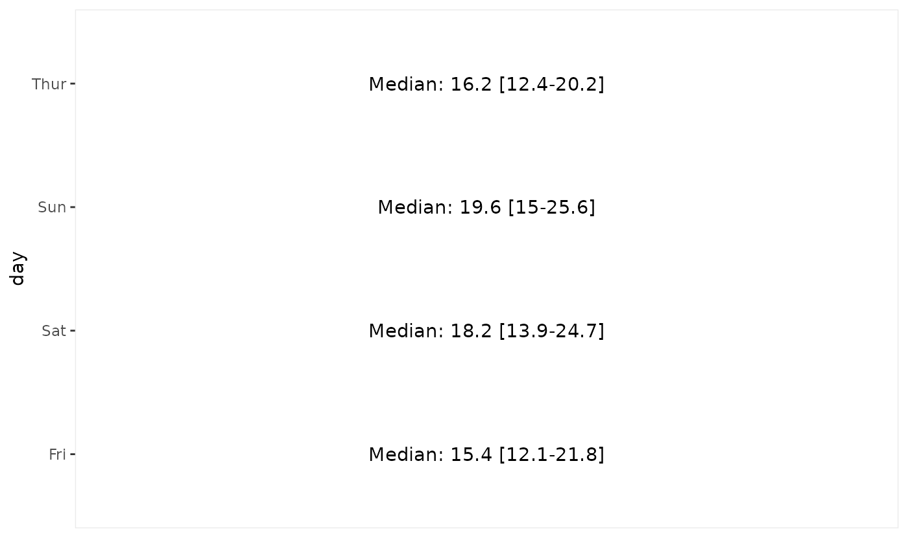
ggally_summarise_by(tips, aes(x = total_bill, y = day, colour = day))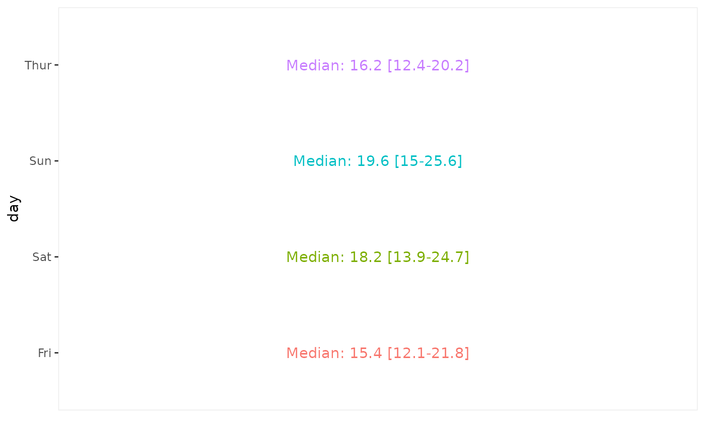
Note: colour aesthetic is kept only if corresponding to the discrete axis.
ggally_trends()
ggally_trends(tips, aes(y = total_bill, x = day))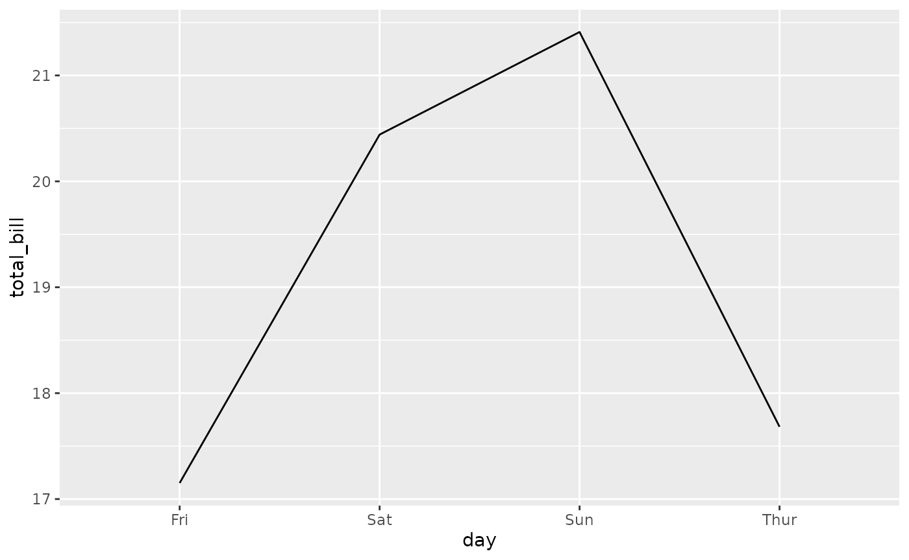
ggally_trends(tips, aes(y = total_bill, x = day, colour = time))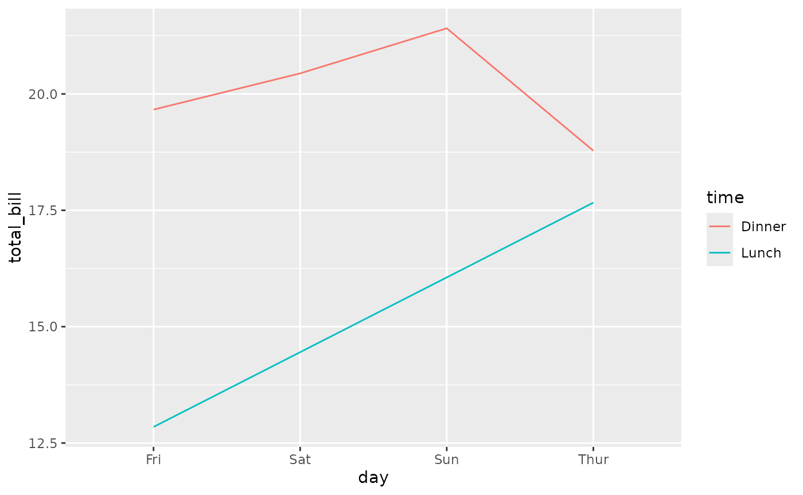
Diagonal plots
with 1x continuous variable
ggally_autopointDiag()
ggally_autopointDiag(tips, aes(x = total_bill))
ggally_autopointDiag(tips, aes(x = total_bill, colour = time))
ggally_barDiag()
ggally_barDiag(tips, aes(x = total_bill))
#> `stat_bin()` using `bins = 30`. Pick better value `binwidth`.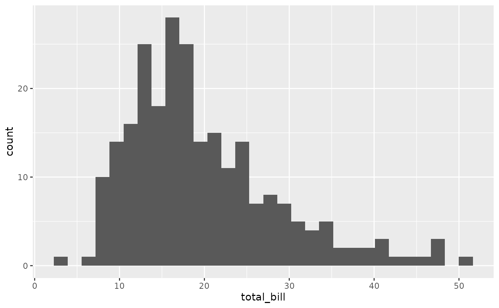
ggally_barDiag(tips, aes(x = total_bill, colour = time))
#> `stat_bin()` using `bins = 30`. Pick better value `binwidth`.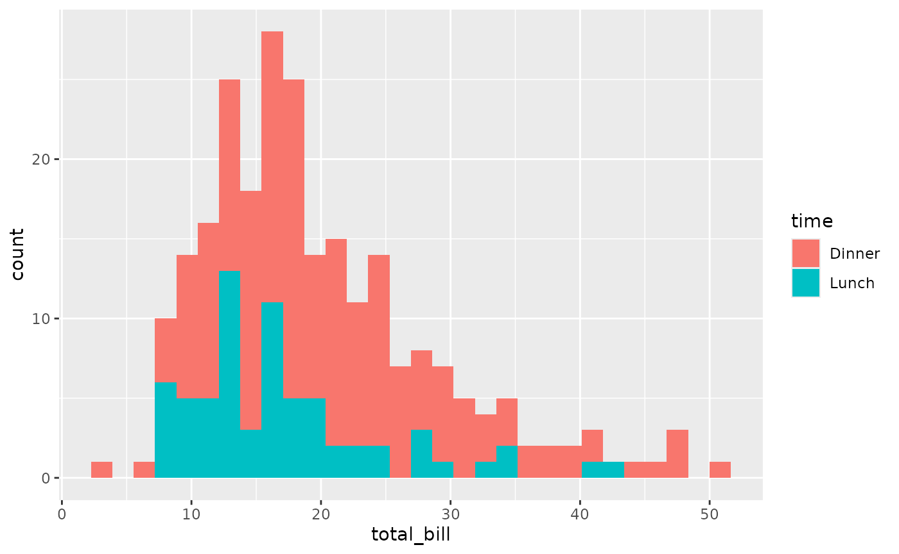
ggally_densityDiag()
ggally_densityDiag(tips, aes(x = total_bill))
ggally_densityDiag(tips, aes(x = total_bill, colour = time))with 1x discrete variable
ggally_autopointDiag()
ggally_autopointDiag(tips, aes(x = day))
ggally_autopointDiag(tips, aes(x = day, colour = time))
ggally_barDiag()
ggally_barDiag(tips, aes(x = day))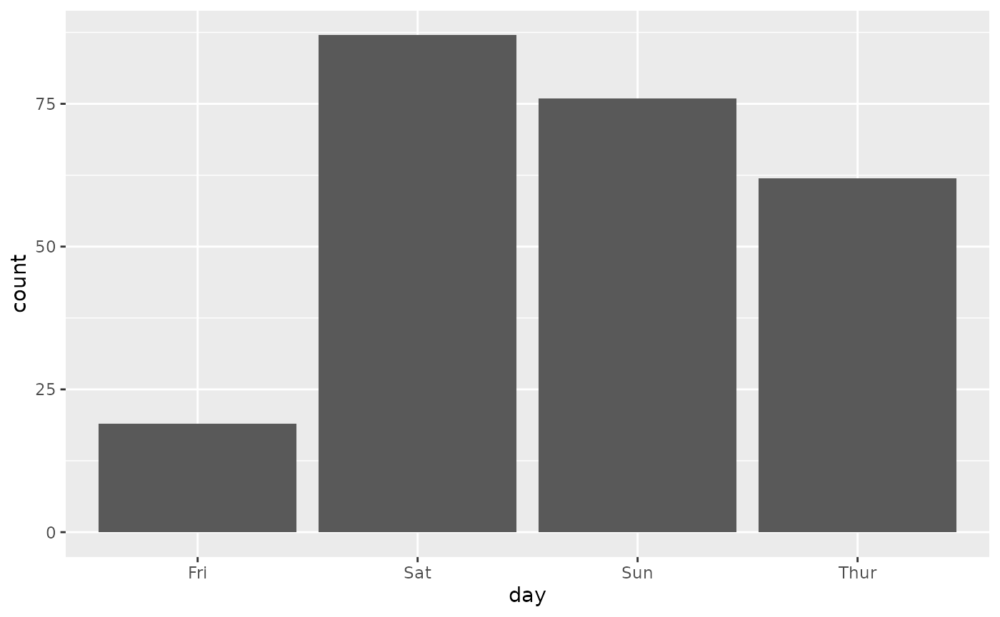
ggally_barDiag(tips, aes(x = day, colour = time))
ggally_countDiag()
ggally_countDiag(tips, aes(x = day))
ggally_countDiag(tips, aes(x = day, colour = time))
ggally_densityDiag()
ggally_densityDiag(tips, aes(x = day))
ggally_densityDiag(tips, aes(x = day, colour = time))
#> Warning: Groups with fewer than two data points have been
#> dropped.
#> Warning: Removed 1 row containing missing values or values outside the scale
#> range (`geom_density()`).Additional plots
-
ggally_statistic()andggally_text()to display custom text -
ggally_blank()andggally_blankDiag()for blank plot -
ggally_na()andggally_naDiag()to display a largeNA